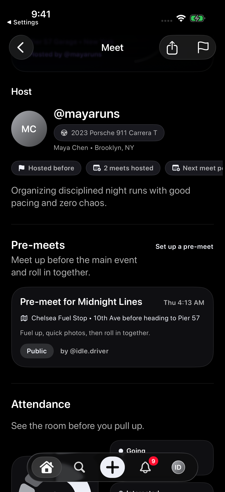
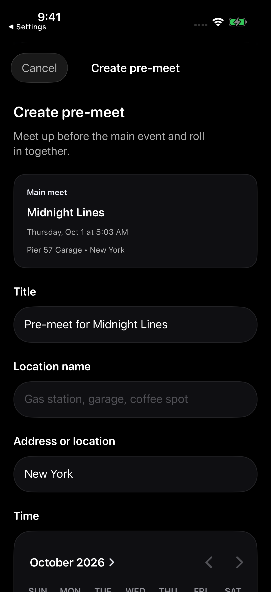
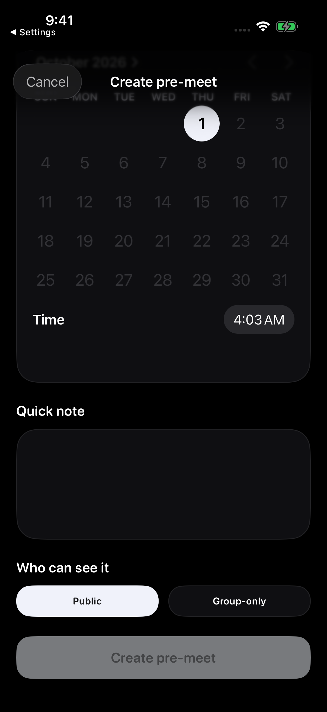
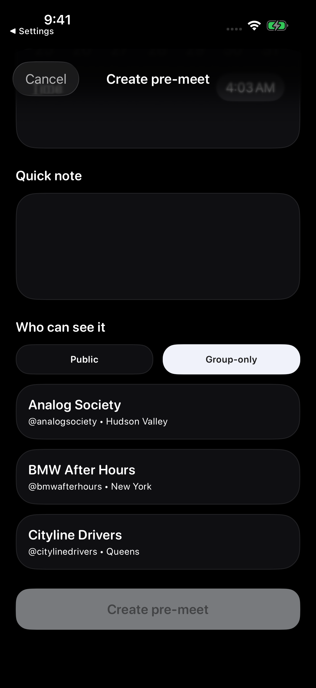

Screenshots show sample content from the Idle test drive in a prerelease build, version 1.3.0 (1), using Dark appearance and Alpine White. Your app may look different. Learn about the test drive.
Start from the main meet
- Open the parent meet and scroll to Pre-meets.
- Choose Set up a pre-meet when the option is available.
- Check the Main meet summary in the Create pre-meet form so you know which meet it is connected to.
Existing pre-meets can show their time, location, note, visibility, and creator on the parent meet page.


Fill in the staging details
Review the Title, then enter a clear Location name and Address or location. Use a specific staging point so people know where to gather.
Choose a date and Time before the main meet starts, and add a Quick note if it helps explain the plan.


Review who can see it
Under Who can see it, review the Public and Group-only options shown for your meet.
Choosing Group-only reveals group choices. Review the audience along with your parent-meet and group access before creating the pre-meet.
The sample form is incomplete, so Create pre-meet is disabled. These screenshots do not show a submitted pre-meet.




What to expect
Pre-meets are connected to a parent meet and should happen before the main meet starts. The option may appear only for meets that support pre-meets and for accounts with the right access. Group pre-meets follow group access.
Troubleshooting
- Option missingThe parent meet may not be eligible, may have started, or may not be visible to you in the right way.
- Cannot editConfirm you created the pre-meet or have the right host access.
- Location unclearAsk the creator or host for a clearer staging point.
Contact support
Email support@idlemeets.com with the parent meet title, pre-meet details, and what action failed.